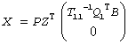
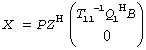

Intel® oneAPI Math Kernel Library Developer Reference - Fortran
Computes the minimum-norm solution to a linear least squares problem using a complete orthogonal factorization of A.
call sgelsy(m, n, nrhs, a, lda, b, ldb, jpvt, rcond, rank, work, lwork, info)
call dgelsy(m, n, nrhs, a, lda, b, ldb, jpvt, rcond, rank, work, lwork, info)
call cgelsy(m, n, nrhs, a, lda, b, ldb, jpvt, rcond, rank, work, lwork, rwork, info)
call zgelsy(m, n, nrhs, a, lda, b, ldb, jpvt, rcond, rank, work, lwork, rwork, info)
call gelsy(a, b [,rank] [,jpvt] [,rcond] [,info])
The ?gelsy routine computes the minimum-norm solution to a real/complex linear least squares problem:
minimize ||b - A*x||2
using a complete orthogonal factorization of A. A is an m-by-n matrix which may be rank-deficient. Several right hand side vectors b and solution vectors x can be handled in a single call; they are stored as the columns of the m-by-nrhs right hand side matrix B and the n-by-nrhs solution matrix X.
The routine first computes a QR factorization with column pivoting:
with R11 defined as the largest leading submatrix whose estimated condition number is less than 1/rcond. The order of R11, rank, is the effective rank of A. Then, R22 is considered to be negligible, and R12 is annihilated by orthogonal/unitary transformations from the right, arriving at the complete orthogonal factorization:
The minimum-norm solution is then
 for real flavors and
 for complex flavors,
where Q1 consists of the first rank columns of Q.
The ?gelsy routine is identical to the original deprecated ?gelsx routine except for the following differences:
The call to the subroutine ?geqpf has been substituted by the call to the subroutine ?geqp3, which is a BLAS-3 version of the QR factorization with column pivoting.
The matrix B (the right hand side) is updated with BLAS-3.
The permutation of the matrix B (the right hand side) is faster and more simple.
INTEGER. The number of rows of the matrix A (m≥ 0).
INTEGER. The number of columns of the matrix A
(n≥ 0).
INTEGER. The number of right-hand sides; the number of columns in B (nrhs≥ 0).
REAL for sgelsy
DOUBLE PRECISION for dgelsy
COMPLEX for cgelsy
DOUBLE COMPLEX for zgelsy.
Arrays:
a(lda,*) contains the m-by-n matrix A.
The second dimension of a must be at least max(1, n).
b(ldb,*) contains the m-by-nrhs right hand side matrix B.
The second dimension of b must be at least max(1, nrhs).
work is a workspace array, its dimension max(1, lwork).
INTEGER. The leading dimension of a; at least max(1, m).
INTEGER. The leading dimension of b; must be at least max(1, m, n).
INTEGER.
Array, size at least max(1, n).
On entry, if jpvt(i)≠ 0, the i-th column of A is permuted to the front of AP, otherwise the i-th column of A is a free column.
REAL for single-precision flavors
DOUBLE PRECISION for double-precision flavors.
rcond is used to determine the effective rank of A, which is defined as the order of the largest leading triangular submatrix R11 in the QR factorization with pivoting of A, whose estimated condition number < 1/rcond.
INTEGER. The size of the work array.
If lwork = -1, then a workspace query is assumed; the routine only calculates the optimal size of the work array, returns this value as the first entry of the work array, and no error message related to lwork is issued by xerbla. See Application Notes for the suggested value of lwork.
REAL for cgelsy DOUBLE PRECISION for zgelsy. Workspace array, size at least max(1, 2n). Used in complex flavors only.
On exit, overwritten by the details of the complete orthogonal factorization of A.
Overwritten by the n-by-nrhs solution matrix X.
On exit, if jpvt(i)= k, then the i-th column of AP was the k-th column of A.
INTEGER. The effective rank of A, that is, the order of the submatrix R11. This is the same as the order of the submatrix T11 in the complete orthogonal factorization of A.
INTEGER.
If info = 0, the execution is successful.
If info = -i, the i-th parameter had an illegal value.
Routines in Fortran 95 interface have fewer arguments in the calling sequence than their FORTRAN 77 counterparts. For general conventions applied to skip redundant or restorable arguments, see LAPACK 95 Interface Conventions.
Specific details for the routine gelsy interface are the following:
Holds the matrix A of size (m,n).
Holds the matrix of size max(m,n)-by-nrhs. On entry, contains the m-by-nrhs right hand side matrix B, On exit, overwritten by the n-by-nrhs solution matrix X.
Holds the vector of length n. Default value for this element is jpvt(i) = 0.
Default value for this element is rcond = 100*EPSILON(1.0_WP).
For real flavors:
The unblocked strategy requires that:
lwork≥ max( mn+3n+1, 2*mn + nrhs ),
where mn = min( m, n ).
The block algorithm requires that:
lwork≥ max( mn+2n+nb*(n+1), 2*mn+nb*nrhs ),
where nb is an upper bound on the blocksize returned by ilaenv for the routines sgeqp3/dgeqp3, stzrzf/dtzrzf, stzrqf/dtzrqf, sormqr/dormqr, and sormrz/dormrz.
For complex flavors:
The unblocked strategy requires that:
lwork≥mn + max( 2*mn, n+1, mn + nrhs ),
where mn = min( m, n ).
The block algorithm requires that:
lwork < mn + max(2*mn, nb*(n+1), mn+mn*nb, mn+ nb*nrhs ),
where nb is an upper bound on the blocksize returned by ilaenv for the routines cgeqp3/zgeqp3, ctzrzf/ztzrzf, ctzrqf/ztzrqf, cunmqr/zunmqr, and cunmrz/zunmrz.
If you are in doubt how much workspace to supply, use a generous value of lwork for the first run or set lwork = -1.
If you choose the first option and set any of admissible lwork sizes, which is no less than the minimal value described, the routine completes the task, though probably not so fast as with a recommended workspace, and provides the recommended workspace in the first element of the corresponding array work on exit. Use this value (work(1)) for subsequent runs.
If you set lwork = -1, the routine returns immediately and provides the recommended workspace in the first element of the corresponding array (work). This operation is called a workspace query.
Note that if you set lwork to less than the minimal required value and not -1, the routine returns immediately with an error exit and does not provide any information on the recommended workspace.